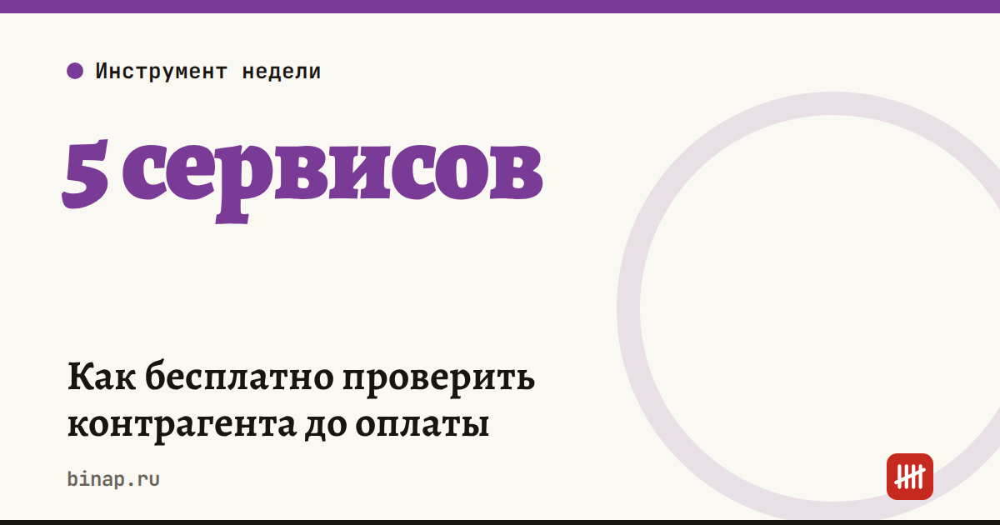

Как бесплатно проверить контрагента до оплаты

Пять минут проверки дешевле, чем предоплата фирме-однодневке. Все сервисы ниже бесплатные и официальные.
| Что проверить | Где |
|---|---|
| Существует ли компания, кто директор, адрес | Выписка из ЕГРЮЛ на сайте ФНС |
| Долги по налогам, сдаёт ли отчётность, массовый адрес | «Прозрачный бизнес» от ФНС |
| Суды: кто и за что судился | Картотека арбитражных дел |
| Долги у приставов | Банк данных исполнительных производств ФССП |
| Банкротство | Федресурс |
Тревожные сигналы: компания моложе полугода, массовый адрес, директор сразу в десятке фирм, иски от поставщиков за неоплату.
Что сделать: сохраните этот список и проверяйте каждого нового поставщика перед первой оплатой.